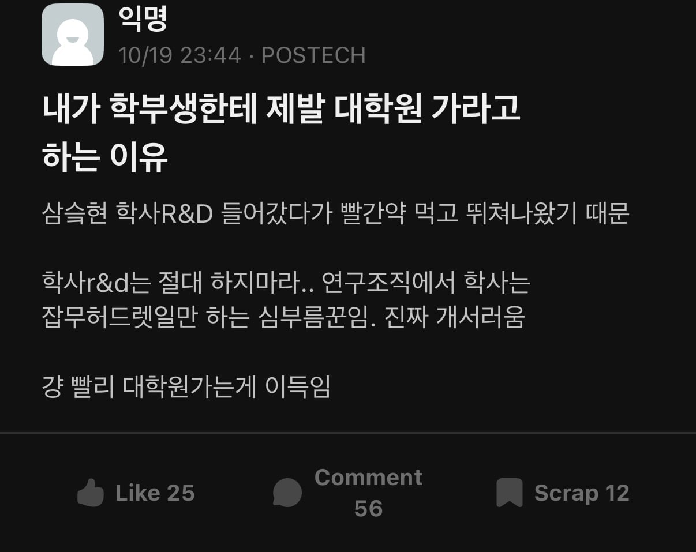

학사 R&D 로 취업했다가 서러움 느끼고 뒤늦게 대학원에 가기 때문
어차피 대학원 갈거면 졸업하고 바로 가라고 함

학사 R&D 로 취업했다가 서러움 느끼고 뒤늦게 대학원에 가기 때문
어차피 대학원 갈거면 졸업하고 바로 가라고 함
그 정도면 평생 은사님으로 모시고 살아야겠다

1년에 한번은 꼭 찾아뵈라...진짜 사회 초년생 목숨줄 살려주셨네....나중가면 더 뼈져리게 느낄거다...
와 박사님이구나
꼬추빨아드려라
학사 R&D는..이런 말 하기 미안하지만 정말 허드렛일 말고 시킬 일이 없긴 하다..
근데 석사만 하고 다시 산업계 갈꺼라면 굳이..? 싶다..
석사는 정말 의미없음.... 산업계갈꺼면 학사 아니면 박사... 석사는 학사축에 들어감...
R&D 안해봐서 아는거 없는데
2~4년 경력은 있어야 박사 할 일 할 수 있는 능력이 있는지 평가를 받을 수 있는거 아닌가..?
우리회사는 박사는 신입부터 과장 주던데
박사는 그걸 5년동안 살면서 먹을 욕 99% 먹으면서 버틴 사람인거임
사업도 박사급 서류에 명시하는 경우 많아서 사실상 전문직 바로 아랫단계 라이센스랑 같다고 봐야함
학사/석사에게 요구하는것과
박사에게 요구하는게 차이가 있음.
학사/석사는 니네는 시키는일 잘해라인데
박사에게는 (니가 박사를 땄기 때문에) 뭔가 해결하지 못할 일을 파고들어서 답을 찾아가는걸 요구함.
보통 박사학위를 따면서 그런 뭔가 문제의 시발점을 찾아내는걸 많이 해봤다고 여기기때문에 보통은 이런 인식이 있고, 또 그 능력을 인정하기때문에 과장부터들 시작함
1. 학사 가지고 뭐할건데?, 2. 석사 가지고 뭐할건데? 테크트리 갈듯
R&D 할꺼면 박사 하는게 좋지 특히 한국은 더욱더
이게 어느정도 공감 되는게
저정도 빅 대기업 R&D 면
학사도 능력이 개ㅈ되는
말 그대로 학사 박사를 안한거지 못하는 능력이 아닌
상대적으로 진취적이고 주도적인 사람이 많을텐데
그런 사람들이 자기 결정권 하나 없이
수동적으로 일처리 하다보면 현타 올거 같기도 함
그정도 능력의 학사면 회사에서 보내줘.. 박사받고 다시 돌아오라고 ㅋㅋㅋ
박사는 무리고.. 석사 정도까지는 보내주겠지
박사 따고 오라고 보내주는 케이스는 석사 학위가 있는 경우일거고
삼전은 보내줘...ㅋ 두케이스 밖에 못봤지만... 애초에 회사돈으로 석사보내주는것도 드물긴하지...
옛날이면 그럴지도
근데 지금처럼 박사가 넘쳐나는 시기에 굳이 개인한테 6년 이상의 시간을 투자한다고..?
내 주변에선 다 박사신입으로 들어가던데
학사따리한테 뭘믿고 시킴 이딴이유가 아니라 진짜 학사따리는 뭘 시킬 수 없는 경우가 있다더라 법적으로 뭐 걸린댔던가 ㅅㅂㅋㅋㅋ
전혀 그런거 없음
국가과제의 경우 책임자로서 박사가 무조건 들어가야 한다는 얘기가 있긴하지
R&D면 널린게 석박산데 잘해봐야 학부연구생따리론 힘들지
포스텍까지 가서 학부취업을 왜하는거야
학사가 대단한줄 아는 사람들 많은데 딱 전공에 대한 기본 튜토리얼 이수에 불과함
R&D 기본기 거의 없다시피 하기 때문에 잡일 말고 시킬 수 있는게 없다
그래서 R&D 이 진로로 간다면 최소 석사는 해야함 석사는 R&D에 대한 튜토리얼 이수자니까
박사급은 이미 R&D에 대한 경험자니까 바로 믿고 맡길 수 있는 수준임
학사가 R&D 들어가서 한 5년 경력 쌓으면 박사급이 된다고? 이등병으로 시작해서 어떻게 영관급이 될수 있나? 대부분 중사 전역이다
학사가 대단한줄 아는 사람이 있음..? 대학진학률이 7~80%인 나라인데..
학부 4학년들. ㅋㅋㅋㅋ
정답 자아가 비대한 4학년들을 많이 봤다
그리고 석사졸업을 내려치기 시도하는것도 많이 봤지
아니면 후딱 기사 자격증 따러가는게 나을수도 있다..
전 멍청해서 석사까지만하고 포기햇습니다.. 세상엔 생각만으론 안되는게 너무 많네요.시작은 박사를 꿈꿨으나 현재는 이공계를 떠나고싶은 마음뿐..
물리학이면 괴수 대잔치일거라 그런 맘이 들 법합니다.. 제가 박사 학위가 있지만 물리는 진짜 차원이 다른 영역인거 같아요
한때나마 그 길로 나아가시려 했던 걸 대단하시다 생각합니다 화이팅이예요
멍청한데 아니라 운이 안좋았을거야
석졸자로서 어떤 일 하고 사시나요
뭐 회사마다 다를테니 이게 정답이다라고 할 수는 없겠다만, 정출연도 아니고 일반 기업이면 학사 출신 r&d라고 빨간약 얘기할 정도로 적응 못하고 발전 없는거 전혀 아님
사기업의 경우 어차피 물건파는게 제1목표인 조직이라서 r&d라고 해서 고고하게 아이디어 만들어내는 일들보다는 지루한 반복업무들이 상당히 많음 그래서 학사들은 저런 일들부터 시작해서 차근차근 올라가면서 본인 프로젝트를 맡게 되는거지 언제고 잡무만 하는게 아님
물론 임원 얘기라면 박사 아니면 어렵다고 봐야지 간간히 석사들도 있긴 하지만, 임원급 인재인데 학사다? 이미 회사서 석사라도 붙여주고
중요한건 본인의 일머리 혹은 업에 대한 태도이지 학위가 아님 일잘러 학사가 박사들 다 후두려 패고 다니는 케이스도 많고 물박사들이 오히려 괴로워하는 경우도 많지 그래서 본인 일머리가 애매하면 걍 학사가 낫다는 얘기도 있고(물론 일머리 애매한건 회사 와야 안다는게 함정)
그래서 r&d 하는 사람들은 학위보다는 일머리가 중요한걸 다들 공감할거임 (다시 얘기하지만 정출연 혹은 사기업이라도 삼성 종기원 같은 곳은 제외)
이렇게 길게 쓴건 진로 정하는 누군가가 이런 게시글 하나 보고 역시 무조건 대학원 이런 식의 생각을 해서 본인이 대학원 맞지도 않는데 본인 인생을 대학원에 우겨넣을까봐 걱정되서 다른 쪽의 시선도 첨언한거
1.정출연은 무조건 박사다
2.사기업은...박사 따면 당연히 좋지만 무조건은 아니다
ㅇㅇ 박사로서 맞는 말이라고 생각함.
진짜 회사는 조직으로서 돈을 벌어오는 집단이기 때문에 학술적인 능력치보다는 대인관계, 상품성을 보는 능력이 아주 중요함.
그래서 박사보다 일 잘하는 학석사들이 많지
다만.. 반대로 '맞아 일만 잘하면 되는거지!'라는 생각으로 R&D를 학사로서 가는 건 정말 말리고 싶음
나중 가서 이 길은 내 길이 아니야.. 라고 후회하기 전에 재능 판별을 위해서라도 석사는 필수라고 생각함
대학원은 일을 안 하고 연구만 할수 있는 시기이기 때문에 이때 연구자로서의 마인드가 장착됨. 학사가 이걸 직장에서 스스로 깨우친다..? 쉽지 않을거 같은데
정말 극소수의 천재가 아닌 바에는 힘들거고, 그 정도의 천재면 석사만 해도 엄청 성과가 쌓일거라 생각함
대기업 r&d 하는 사람으로써 이사람 말에 크게 공감함. 인식에 비해 같은 직무에 있으면 박사,학사 하는일에 크게 차이 없고 오히려 과장으로 바로 들어와서 적응 못하는 박사보다 저년차부터 회사안에서 히스토리 쌓아온 학사가 잘나가는 경우도 많음.
근데 이건 업계에 따라서 또 많이 다를거라 박사 아니면 못하는 일 하는 업계도 있겠지. 잘 모르지만 제약쪽은 그렇지 않으려나
학사가 할수있는거
사내정치 술 끝
“연” 자 들어가는 조직이면 그럴듯
가고싶은 분야가 있다면 석사 가는게 맞다
식품도 학사 R&D는.. 비추
학사 : 시키는 것만 잘해라
석사 : 시킨거 잘해라
박사 : 시켜
학사는 기사딴 고졸과 별 차이 없음
완전히 없는건 아닌데 배우기만 하면 된다는점은 같음
저 위에 회사 다니는데 몇년 다니면서 일하다 보면 결국 학사나 박사나 똑같은 일 함 물론 팀바팀인것도 잘 암
나도 기계과학사나온 rd이긴한데 가끔 자교 리쿠르팅같은거 가면 석사까지는 해보라고 하는편이긴함
학사 : 와 콜라는 종이컵이랑 유리컵이랑 먹을때 맛이 다른데? 아무튼 유리컵이 맛있음
석사 : 종이컵에 무슨 성분이 콜라와 맛나서 콜라 맛이 변질 됨 그래서 해결하는 방안은 내생각엔 뭐뭐뭐야 라는 논문 낼게
박사 : 와 종이컵에 a성분이 문제니 종이컵에 a성분 대신 b성분을 첨가한 종이컵써보니깐 변질되는 맛없고 눅눅해지는 효과도 없어짐 라는 논문 낼게
여기서 중요한건 석사는 기본적으료 각 분야산업의 연구동향 연구방식 등은 할 수 있는데 박사는 연구 계획부터 방향을 잡아줄수있냐는게 중요한거지
이게 어차피 경력 쌓이면 하는 일 비슷해지긴 하는데 계속 무시 받고 나중에 이직 하고 싶어도 학력이 발목 잡음. 연구 쪽에 있을거면 최소 커트라인이 석사고 나중에 회사 다니면서라도 박사까지 하긴 해야돼
내가 군대에서 병신 되고 나서 교수님이 나 커리어 끊어질까봐 삼년간 조수로 써주시고 학장한테 추천서 써달라 해서 박사학위 붙여주셨는데 그냥 시발 존나 감사하다